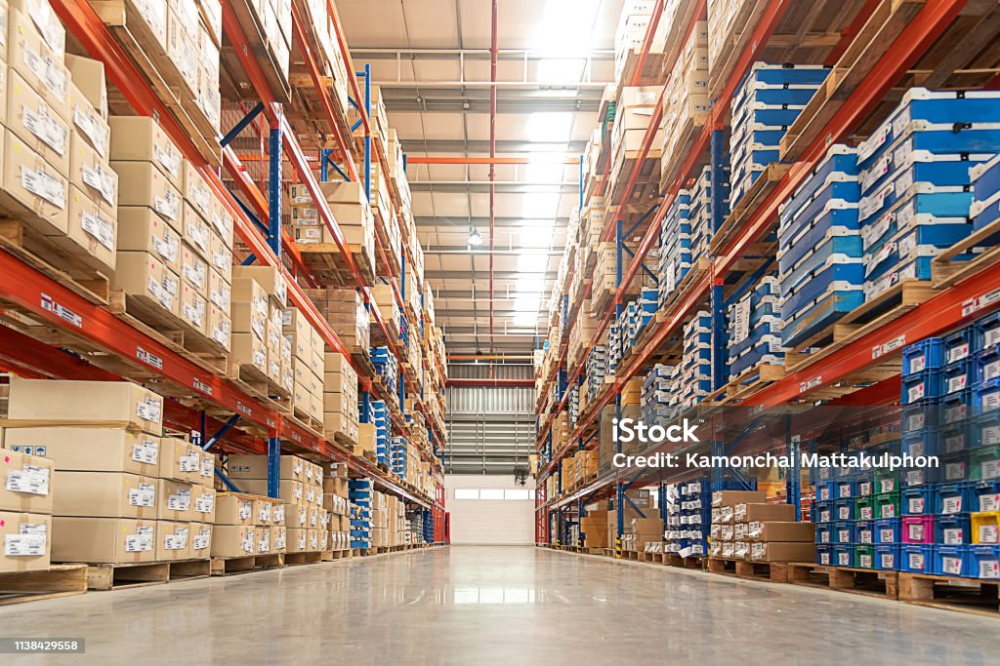

Herramientas
Herramientas y accesorios para realizar reparaciones y trabajos de mantenimiento tanto en el hogar como en el ámbito profesional.

Todo lo que necesitas para tus proyectos, reparaciones y trabajos de bricolaje.
Haz un pedidoUn espacio pensado para ayudarte a encontrar los productos y herramientas que necesitas para tus proyectos.
En Ferretería Dávila ofrecemos una amplia variedad de artículos relacionados con la ferretería, el mantenimiento, las reparaciones y el bricolaje. Nuestra página web permite conocer mejor nuestro establecimiento y consultar diferentes contenidos antes de visitarnos.
Tanto si eres un particular que necesita realizar una pequeña reparación en casa como si eres un profesional que busca materiales y herramientas para su trabajo, puedes utilizar nuestra web para conocer nuestros servicios y ponerte en contacto con nosotros.
También puedes consultar nuestra galería, solicitar un presupuesto o contactar directamente con la ferretería para realizar una consulta o un pedido.
En nuestra ferretería puedes encontrar diferentes soluciones para trabajos de mantenimiento, reparación y bricolaje.
Herramientas y accesorios para realizar reparaciones y trabajos de mantenimiento tanto en el hogar como en el ámbito profesional.
Productos pensados para pequeños proyectos, tareas de mantenimiento y mejoras que puedes realizar en casa.
Diferentes materiales y accesorios destinados a trabajos de reparación, instalación y mantenimiento.
Si no sabes qué producto necesitas para tu proyecto, puedes contactar con nosotros para realizar tu consulta.
Queremos facilitar al cliente la búsqueda de productos y el contacto con nuestra ferretería.
Puedes contactar con nosotros para resolver dudas y recibir orientación sobre tus necesidades.
La ferretería reúne diferentes categorías de productos para trabajos de reparación, mantenimiento y bricolaje.
La web facilita el acceso a nuestros datos de contacto y permite realizar consultas directamente.
En la sección de noticias puedes consultar información y novedades relacionadas con nuestra actividad.
Si necesitas información sobre un producto, quieres realizar una consulta o deseas hacer un pedido, puedes ponerte en contacto con Ferretería Dávila directamente.
Contactar por WhatsAppConsulta las últimas noticias y novedades que aparecen en nuestra página.
Cargando noticias...